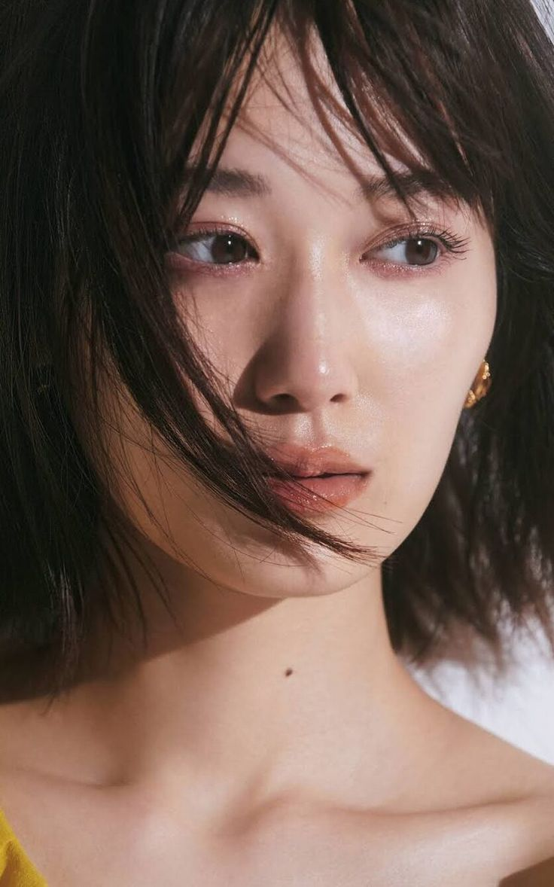
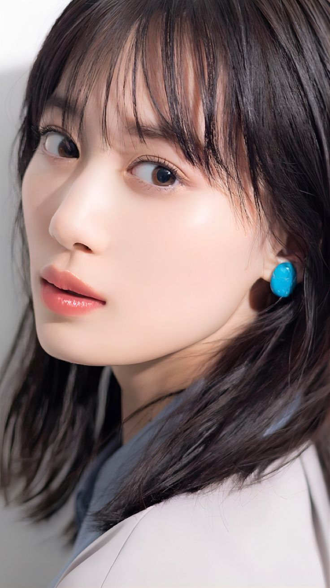
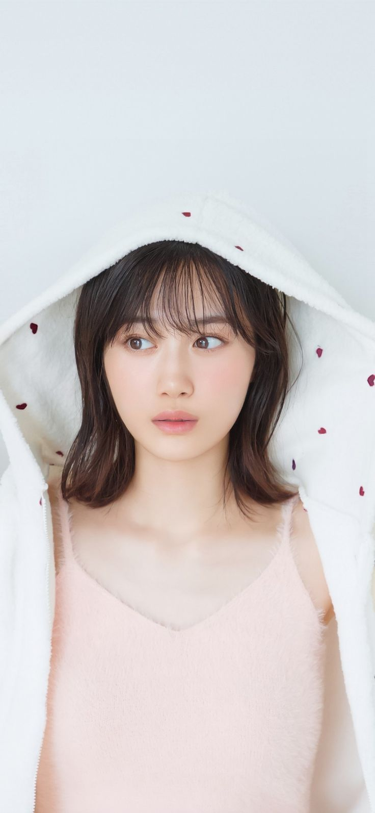

山下美月ファンページ

こんにちは、皆さん、山下美月もうすぐ卒業ですそれを聞いてとても悲しいです.私は賀喜推しですが賀喜さんの先輩でありファンとして、美月さんの卒業スピーチは今でもとても悲しいです.まずは、私が乃木坂と出会ったきっかけからお話しさせて
ください！ 私が乃木坂を知ったのは5期生が入ってきたばかりの頃で、ちょうど大学生の頃で、公式のおやつスペシャルでボスみたいに地面にしゃがんでいた賀喜さんをYouTubeのリールで勧められました。面白くて、可愛くて、ハンサム
(ふふふ、今見ても同じくらい面白いです😂)
そうして私は乃木坂を知り、徐々にその精神に傾倒していきましたが、想像できなかったのは、高校生＋20代前半の女の子が集団で残酷な活動をしながら、歌に合わせて祈りながら、😇.
まさに乃木坂のキャッチコピー:"“せーの！のー！👏 ぎゅっ！👏ぎゅっ!せーの！努力！感謝！笑顔！うちらは乃木坂 上り坂46".今、乃木坂は本当に素晴らしいようです😍。
すみません、本題に戻りますが、まずは山下美月さんの印象から。 一見陰険で可愛い人に見えますが、良い意味で性格はそのままのようです(笑)そして動きが超デカいです良い意味で(プー)恩返しができる人でもありますいじめられたときは10倍。
良い意味で😌。

山下美月登場！ ！
- **名前**: 山下美月（やました， みづき）
- **職業**: アイドル、女優、ファッションモデル
- **所属**:
- 女性アイドルグループ**乃木坂46**のメンバー
- **CanCam**誌の専属モデル
- **個人情報**:
- 生年月日: 1999年7月26日
- 出身地: 東京都
- 身長: 160 cm
- 血液型: O型
- **愛称**: "づっきー"、"みづき"、"やま"
山下美月さんは、乃木坂46のメンバーとしての活躍とファッション業界での才能が光っています。
出典

乃木坂46の3期生として2016年にデビューした山下は、その後、数々の楽曲でセンターポジションを務め、映画やドラマにも出演しました。また、ファッション誌『CanCam』の専属モデルに抜擢され、自身の1st写真集は歴代2位の初週売上を記録しました。
2021年には自身初の表題曲センターを務め、地上波プライム帯の連続ドラマに初出演しました。2022年には連続テレビ小説『舞いあがれ!』にレギュラー出演し、乃木坂46現役メンバーの朝ドラ出演は初となりました。2023年にはファッションブランド
RESEXXY」のイメージモデルに 起用され、32ndシングルでWセンターを務めました。2024年には新たなドラマに出演し、同年2月に乃木坂46からの卒業を発表しました。その後、35thシングルが最後の参加となり、5月に卒業コンサートが予定されています。
これらの活動を通じて、山下は乃木坂46の一員として、そして個人としても大きな成功を収めてきました。
山下美月の好きな食べ物は、えんがわ寿司、味噌汁、梅、おにぎり、刺身など。 特にニンニクが好きで、職場に持参したニンニクソースをよく食べている。 それでおしまい。 好きなケーキはモンブラン、嫌いなものは抹茶とヨーグルトです。
私はドラマや映画が好きで、一番好きなのは「チョコレート」です。 私の好きなキャラクターはポムポムプリン、ハンギョドン、ムーミン、ぱんちゅうさぎです。
趣味はフラミンゴ鑑賞で、ゴルフ、テニス、バレーボール、ダンスの経験があります。 高校では茶道部に入り、茶道の作法、浴衣の着方、和室の作法、花の種類などたくさんのことを学びました。
山下美月は乃木坂46のメンバーであり、若狭軍団(スプーン)のメンバーでもあります。 オオバコのカラーは、夜空に浮かぶ月をイメージした「ブルー×イエロー」。 憧れの先輩は西野七瀬と桜井玲香で、同級生の久保史緒里とのコンビは「クボシタ
と呼ばれていた。先輩で大学院生の齊藤飛鳥、同級生の伊藤莉杏、中村莉乃、後輩の賀喜遥香とも仲が良い。
2021年11月28日放送の『ファッションカット』で、2019年4月からの2か月の休業期間中に芸能界を辞めようと考えていたことを告白した。
山下美月の一番の魅力は総合力であり、エースとしての実力、演技力、バラエティセンス、どれもがとても信頼感を与えてくれます。 山下美月は乃木坂の三代目エースとも言えるでしょう。
現在、2021年の『ぷのぷを好きになる』、2023年の久保さんとのダブルセンター『人間の夢を二度目の出会い』と2度センターを務めている。
以下はYouTubeのMVリンクです
センター曲
ダブルセンター曲